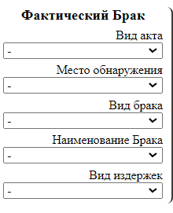
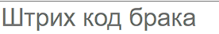
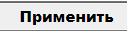
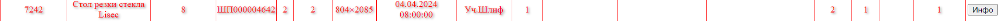
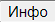
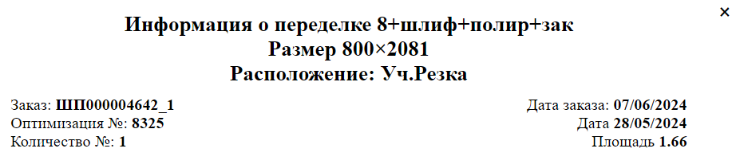

Инструкция по выбраковке стекол и стеклопакетов
На странице "Брак" расположены следующие элементы:
-
Секция выбора фактического брака:
Эта секция включает в себя выпадающие списки для выбора:Пользователь может выбрать значения из существующих списков, которые будут применены к отсканированному штрих-коду.
- Вид Акта
- Место обнаружения
- Вид брака
- Наименование Брака
- Виды издержек
-
Секция ввода штрих-кода:
В этой секции находится поле для ввода штрих-кода стекла или стеклопакета.
Штрих-код может быть введён вручную или отсканирован при помощи сканера. После ввода штрих-кода необходимо нажать кнопку
или клавишу Enter.
Если введённый штрих-код обработан без ошибок, в правом верхнем углу экрана появится сообщение "Операция выполнена".
Если произошли ошибки, появится сообщение "Операция не выполнена".
После успешного выполнения браковки штрих-кода, на странице "Рабочее место" позиции, помеченные как бракованные,
будут выделены красным цветом.

Для просмотра состояния переделки стекла нажмите кнопку:

Откроется диалоговое окно

Данное окно содержит следующую информацию:
- Информация о переделке стекла
- Размер стекла
- Расположение - участок, на котором сейчас находится стекло
- Заказ и дата заказа
- Раскрой и дата
- Количество
- Площадь
Данная информация позволяет отслеживать текущий статус переделки и узнать все необходимые детали о состоянии стекла.